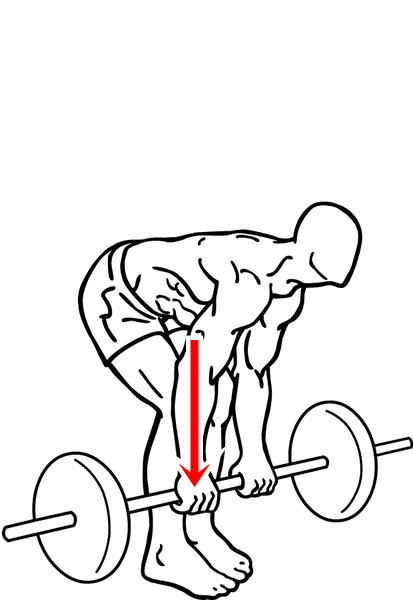

데드리프트 (Deadlift)
웨이트 트레이닝을 대표하는 3대 운동(스쿼트, 벤치 프레스, 데드리프트) 중 하나이다. 제대로 배우고 원칙을 준수한다면 안전하며 데드리프트는 전신의 근육을 활용하는 효율적, 효과적인 운동이다. 전문적인 지도와 보호가 이뤄진다는 전제하에 누구라도 강력히 추천하는 운동이다.
주의할 점
절대로 모멘트 암이 나서는 안되며 힙 힌지를 걸어서 고관절을 주동으로 가져가야 한다. 만약 데드리프트를 수행 할 때 모멘트암이 발생하고 힙 힌지를 잡지않으면 바벨의 무게가 모두 허리로 가기 때문에 매우 위험하다.
데드리프트하는 방법